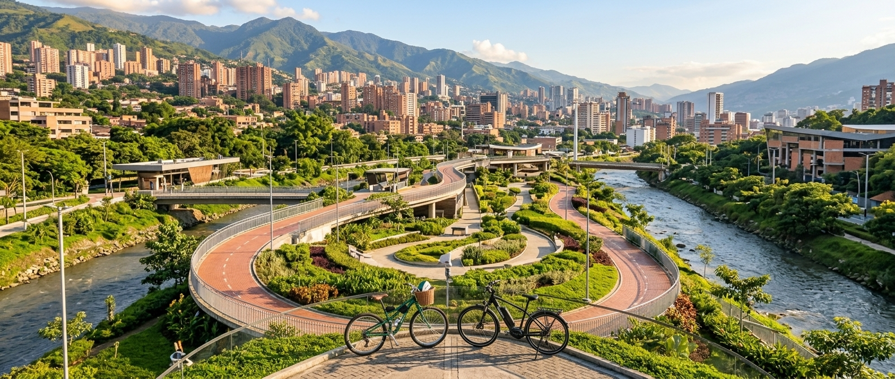
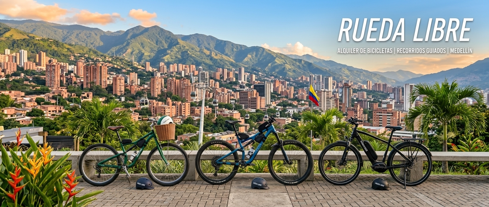
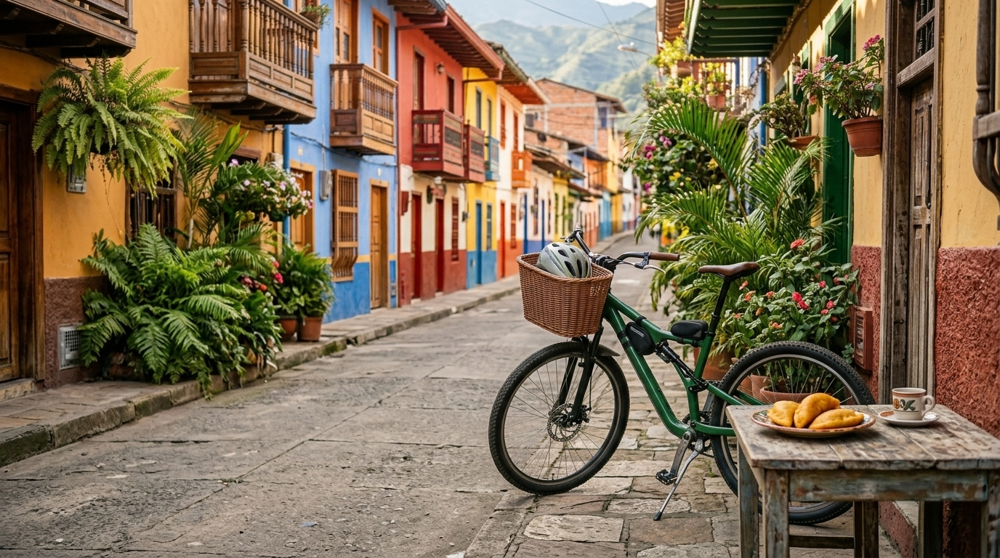
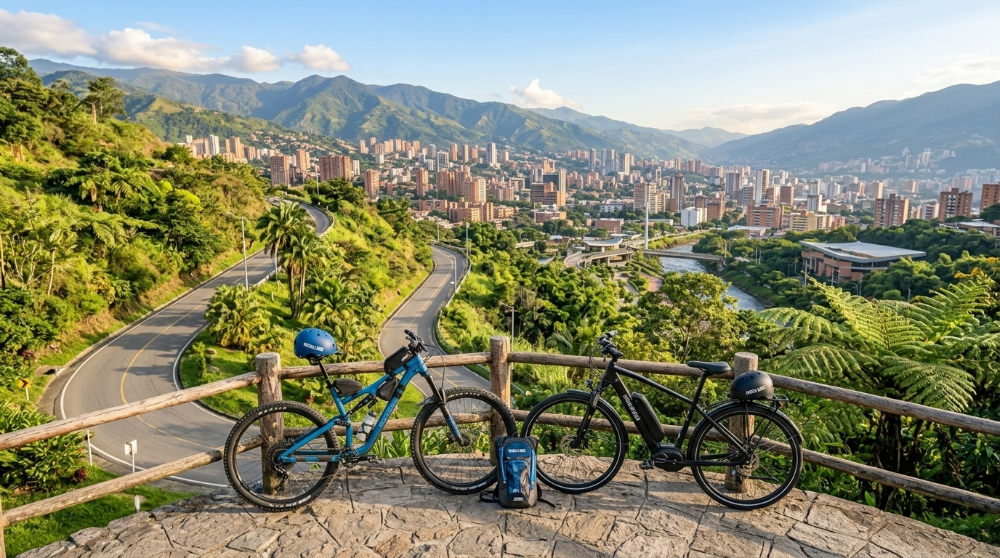
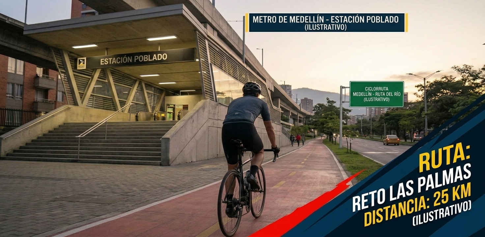

Río y Parques

Nivel de dificultad: Fácil

Descubre Medellín a tu ritmo El Valle de Aburrá se vive mejor pedaleando. Siente la brisa de la ciudad de la eterna primavera mientras recorres sus calles, parques y montañas con total libertad. Ya sea que busques un paseo tranquilo por las ciclorrutas, una aventura exigente en la naturaleza o moverte ágilmente con asistencia eléctrica, tenemos la bicicleta perfecta esperándote. Elige tu ruta, ponte el casco y prepárate para rodar.

Somos un emprendimiento apasionado por la movilidad sostenible en Medellín. Queremos que locales y visitantes descubran la magia de nuestra ciudad pedaleando, ofreciendo una alternativa de transporte ecológica, saludable y divertida.

Nivel de dificultad: Fácil

Nivel de dificultad: Medio

Nivel de dificultad: Difícil
Conoce las opciones que tenemos disponibles para que ruedes cómodamente por Medellín:
Cómoda y liviana para las ciclorrutas.
$10.000 x hora
 Reservar
Reservar
Se dobla en segundos; ideal para combinar con el metro.
$12.000 x hora
 Reservar
Reservar
Suspensión delantera y 21 cambios para las subidas.
$15.000
x hora
 Reservar
Reservar
Para rutas mixtas de asfalto y destapado.
$18.000 x hora
 Reservar
Reservar
Asistencia eléctrica con 45 km de autonomía.
$18.000 x hora
 Reservar
Reservar
Para niños de 6 a 10 años.
$8.000 x hora
 Reservar
Reservar
Para dos personas; perfecta para pasear en pareja
$20.000 x
hora
 Reservar
Reservar
Recorre Medellín con total libertad. Ofrecemos bicicletas por horas, medio día o días completos. Todo alquiler incluye casco y candado de alta seguridad. Siente la brisa y disfruta del clima de la eterna primavera en cada trayecto.
Únete a nuestras rutas temáticas por el centro histórico, parques principales y zonas de arte urbano. Cada recorrido guiado incluye hidratación y un guía bilingüe. Es la oportunidad perfecta para conocer la verdadera esencia paisa.
Conoce los detalles de nuestros recorridos.
¿Tienes tu propia bicicleta pero necesita un ajuste? Nuestro equipo de mecánicos expertos ofrece servicio de mantenimiento preventivo, reparación de pinchazos, y ajuste de frenos y cambios para que sigas rodando seguro por la ciudad.
Estas son nuestras tarifas.

Estamos ubicados a pocos pasos de la estación Poblado del Metro,
listos para entregarte tu bicicleta.
Nuestra ubicación
Contáctanos